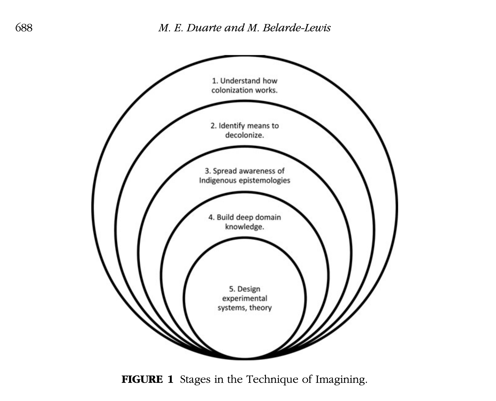

sharing, responding, meditating on, taking action based upon, moving forward with information
In Network Sovereignty, communications scholar Marisa Elena Duarte (Yaqui) writes, "Read against the century of US anti-Indian campaigms and imperial expansion, narratives of technological advancement function to satisfy societal desires of Englightenment-era values of progress and scientific evolution in spite of the colonial fabric of Indian eradication"1
protecting your own information online IS protecting your friends offline
maps as always and already not protecting, and not only not protecting, but violently exposing, the people excluded in their making
2
at the end of the day what is the technical tool that you made? for example, at the end of the day he who shall not be named made a CRUD (create, read, update, delete) web app which allows people create profiles, make posts with text and images on a chronological timeline, and follow their friends who have done the same. still at the end of the day the questions remain: in what ways have you ignored, forgotten, pushed aside, or perhaps even deliberately coded in the social position from which you are operating?